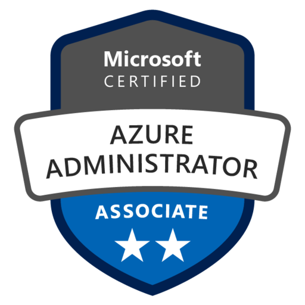
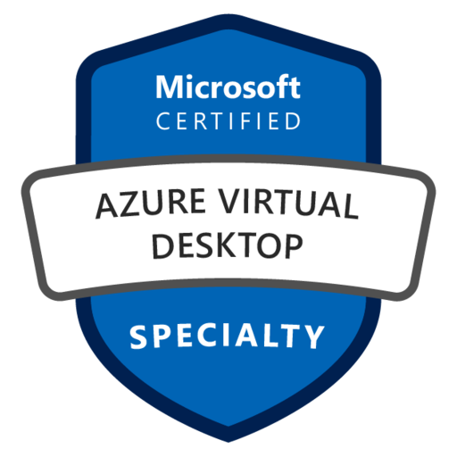

Microsoft Certifications: the complete guide to paths, levels & exams
Microsoft certifications are role-based: they validate that you can do a job, not just that you memorized a product. This guide maps the whole landscape — the four levels, the badges and titles each path delivers, the Azure learning paths, why certifications matter, what they cost, and exactly how to schedule and sit the exam — online from home or at a test center.
What Microsoft certifications are
Since 2018, Microsoft moved away from product-version certifications (the old "MCSA / MCSE" world) to a role-based model. Instead of "certified in Server 2016", you now certify as an Azure Administrator, a Security Engineer, a Solutions Architect, and so on. Each certification maps to a real job role and the tasks that role performs day to day, and each is earned by passing one or more exams.
Certifications are organized along two axes: a product family (Azure, Microsoft 365, Security, Power Platform, Dynamics 365, Data & AI) and a level (Fundamentals, Associate, Expert, Specialty). Pick the role you want, follow its learning path, pass the exam, and you earn a digital badge and a title you can put on your CV and LinkedIn.
Why certifications matter
"Do certifications really matter?" — yes, for several concrete reasons, even if they never replace hands-on experience:
- They structure your learning. A path turns a vague "I should learn Azure" into a concrete syllabus with an end goal.
- They are a hiring signal. Recruiters filter by them; many job postings list them as required or preferred.
- They unlock partner status. Microsoft partner designations require a number of certified individuals — so certified staff are commercially valuable to employers.
- They can move your salary. Certified cloud roles consistently report higher compensation in industry surveys.
- They keep you current. The cloud changes monthly; the free annual renewal forces you to stay up to date.
- They build credibility. A verifiable badge is third-party proof of skill for clients and colleagues.
Certifications open doors; experience keeps you in the room. Use them to structure learning and prove a baseline — then back them with real projects.
The four levels
Every Microsoft certification sits at one of four levels. They form a natural progression — Fundamentals to build vocabulary, Associate to certify a role, Expert to certify seniority — with Specialty off to the side for narrow, deep topics.
| Level | Purpose | Prerequisite | Example |
|---|---|---|---|
| Fundamentals | Core concepts & vocabulary of a domain | None | AZ-900 · AI-900 · SC-900 |
| Associate | Certify you can perform a job role | Recommended hands-on experience | AZ-104 · AZ-204 · AZ-500 |
| Expert | Certify advanced/senior capability | Experience (former exam prereqs now relaxed) | AZ-305 · AZ-400 |
| Specialty | Deep skill in a narrow area | Domain experience | AZ-140 (Azure Virtual Desktop) |
Badges & the titles you earn
When you pass, Microsoft issues a verifiable digital badge (via Credly) and a certification title. The badge is colour-coded and shaped by level, links back to a verification page, and can be embedded on LinkedIn, your CV or a website. The title follows the pattern "Microsoft Certified: <Role> <Level>".
 Fundamentals
Azure Fundamentals
AZ-900
Fundamentals
Azure Fundamentals
AZ-900

Associate Azure Administrator AZ-104
Specialty Azure Virtual Desktop AZ-140Azure learning paths & the titles they deliver
For a cloud professional, the Azure family is the centre of gravity. Most journeys start with the AZ-900 Fundamentals, branch into an Associate role, and for some culminate in an Expert certification. Here's how the main exams map to the title you earn.
| Exam | Certification title earned | Level |
|---|---|---|
| AZ-900 | Microsoft Certified: Azure Fundamentals | Fundamentals |
| AZ-104 | Azure Administrator Associate | Associate |
| AZ-204 | Azure Developer Associate | Associate |
| AZ-500 | Azure Security Engineer Associate | Associate |
| AZ-700 | Azure Network Engineer Associate | Associate |
| DP-203 | Azure Data Engineer Associate | Associate |
| AI-102 | Azure AI Engineer Associate | Associate |
| AZ-305 | Azure Solutions Architect Expert | Expert |
| AZ-400 | DevOps Engineer Expert | Expert |
| AZ-140 | Azure Virtual Desktop Specialty | Specialty |
Beyond Azure — the other families
Azure is one of several certification families. If your role spans the wider Microsoft Cloud, these are the other tracks worth knowing.
How to prepare
Every exam has a published study guide listing the skills measured. Build your prep around it:
- Microsoft Learn (free). Each certification has official, free learning paths — the primary, authoritative source.
- Hands-on practice. An Azure free account or a sandbox. Nothing beats actually doing the tasks the exam tests.
- Official practice assessment (free). Microsoft provides a free practice assessment for most exams to gauge readiness.
- Instructor-led training (paid). Microsoft Official Courses via Learning Partners, often with a lab environment.
- The exam sandbox. Try the question-type demo so the interface (case studies, labs) holds no surprises.
Scheduling & taking the exam
Microsoft exams are delivered by Pearson VUE. You schedule from the certification page on Microsoft Learn, signed in with the Microsoft account that holds your certification profile. The big choice is where you sit it: online proctored from home/office, or at a Pearson VUE test center.
Online proctored vs. test center
Pricing
Exam price depends on the level and your country. As a guide (US list prices; local prices vary and are shown at checkout in your currency):
| Level | Typical US price | Notes |
|---|---|---|
| Fundamentals | ~US$99 | Lowest cost; great low-risk first exam. |
| Associate | ~US$165 | The bulk of role-based exams. |
| Expert | ~US$165 | Single exam each (AZ-305, AZ-400). |
| Specialty | ~US$165 | Same as role-based exams. |
- Local pricing varies. Brazil and other regions are priced in local currency — always confirm on the official exam page at checkout.
- Discounts exist. Students get reduced fees; Microsoft frequently runs free/discounted exam vouchers via events like Microsoft Ignite Cloud Skills Challenge.
- Retakes cost again. Fail, and a retake is a fresh paid attempt — though waiting periods between attempts apply.
- Renewals are free. See below — renewing never costs you a cent.
Renewal — free, every year
Role-based and specialty certifications expire one year after you earn them — but renewing is free and done entirely on Microsoft Learn. Within the six months before expiry, you take a short, unproctored, open-book renewal assessment online; pass it and your certification extends another year. Fundamentals certifications do not expire. This model keeps certified skills current as Azure evolves, at no recurring cost.
A quick path-picking checklist
- Pick the role, not the exam. Decide the job you want (Administrator? Architect?), then follow that path.
- Start with Fundamentals only if new. Experienced? You can skip straight to the Associate exam.
- Read the study guide first. It lists exactly the skills measured — your scope is defined for you.
- Practice hands-on. Spin up real resources; the exams reward people who've actually done the tasks.
- Take the free practice assessment. Use it to decide if you're ready to book.
- Choose delivery deliberately. Reliable quiet room → online; otherwise a test center.
- Diarize the renewal. Set a reminder for ~10 months out so the free renewal never lapses.
Official Microsoft references
- LearnMicrosoft Credentials — homeThe hub for all certifications, exams and learning paths.
- LearnBrowse all certifications & examsFilter by product, role and level to find your path.
- LearnAzure Solutions Architect Expert (AZ-305)Example certification page with study guide and the schedule button.
- LearnExam duration & experienceQuestion types, timing and what the exam interface is like.
- LearnSchedule an exam with Pearson VUEStep-by-step scheduling, online proctored vs. test center.
- LearnOnline exam environment requirementsWhat you need for a home/online proctored exam.
- LearnRenew your certification (free)How the free annual renewal assessment works.
- LearnCertifications & exams FAQPricing, policies, retakes and badge questions.